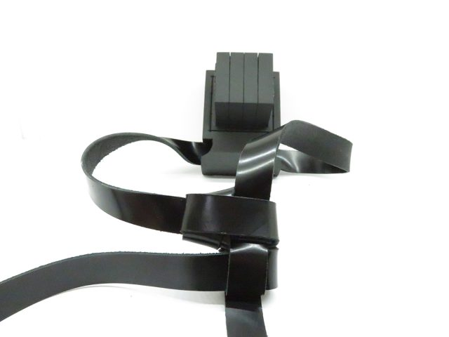

אופן שני בעשיית קשר ה-ד׳ לדעת המקובלים
תקציר
מאמר זה סיימתיו בעזר השי"ת ביום ל"ג בעומר תשפ"ב בהילולת רבי שמעון בר יוחאי, והוא מדבר בעניין קשר הדלי"ת בתפילין של ראש, היאך לעשותו לדעת הרש"ש והמקובלים.
שרצועת הימין תפנה לשמאל, ורצועת שמאל תיטה לצד ימין…
תוכן המאמר
אופן שני בעשיית קשר ה-ד׳ לדעת המקובלים

מאמר זה סיימתיו בעז"ה ביום ל"ג בעומר תשפ"ב הילולת רבי שמעון בר יוחאי, והוא מדבר בעניין קשר הדלי"ת בתפילין של ראש, היאך לעשותו לדעת הרש"ש והמקובלים.
אמר הכותב: ידע הקורא כי אין דרכי לעסוק או לכתוב בנסתרות ולא יחשוד בי במה שאינו, רק ליקטתי הדברים למעיינים העוסקים בכך, בבחינת 'תן לחכם ויחכם עוד', וכתבתי בזה כי נשאלתי בדברי הרש"ש ובמנהג קשירה זו מספר פעמים, והחלטתי לכתוב במקום [1]שלא כתבו אחרים, כי מקום הניחו לי להתגדר בו, בחלק זה של התורה.
עוד אומר למעיין הרוצה לעמוד על דברי המקובלים בהבנה נכונה, כי עליו המלאכה מוטלת לפתוח המקורות בפנים, כי אני הקטן קצרתי דבריהם הק' בכדי שיוכל הקורא אף זה שעדיין לא נכנס בחכמה זו להבינם באופן שוטף וקולח.
מקורות:
איתא בעץ חיים לרבינו האר"י: ב' רצועות ימנית עד החזה קצרה, ורצועת שמאל עד הטבור ארוכה. והקשה מזוהר פנחס ששם כתוב כי הרצועה הימנית ארוכה, ותירץ הרב כי בזוהר פנחס דברו בבחינת המניח תפילין בעצמו, אך בבחינת הבינה עצמה נמצא כי ימין שבה הוא שמאל שבו וכן להיפך.
ובביאור השמ"ש להרש"ש, (על עץ חיים שער כט, שער הנסירה, פ"ט אות ב) הצריך עיון היאך עפ"י סוד משכחת שימין שבה הוא שמאל שבו, ע"ש. ותירץ דהיינו על בחינת ב' הרצועות הנמשכות מנצח והוד דאבא ואמא שבחכמה ובינה דזעיר אנפין, ומסבבות ומקיפות הראש דזעיר אנפין עד העורף שבו, ושם נקשרים שתיהם, וסרח העודף ברצועות נמשכות על שתי כתיפיו מצד הפנים, רצועות הימין לשמאלו עד החזה, ורצועות השמאל לימינו עד הטיבור, וכנראה בחוש, מעשה קשר בתפילין דראש, שרצועות הימין נמשכת על כתף שמאל, ושל שמאל לימין, וכו'.
וכן הוא בביאור יפה שעה (שם אות ג), ואף השמן ששון על עץ חיים (שם) הביא דברי הרש"ש. וע"ע בטועמיה חיים זכו על עץ חיים (שם, ד"ה נמצא), ודו"ק.
שוב מצאתי בספר מצת שימורים להרב נתן שפירא זצ"ל (הלכות תפילין, סוד השתי רצועות התלויות מן הקשר של תפילה דראש), אחר שהאריך בסוד השתלשלות הרצועות מטה, כתב, וז"ל: לכן אחר שנעשה הקשר כתיקונו מתהפכות הרצועות, ומה שהיה מתחילה בימין דזעיר משתלשל ויורד בשמאל דזעיר, ומה שהיה בשמאל דזעיר יורד בימין דזעיר וכו', שאחר הקשר מתחלפות הרצועות ימין לשמאל ושמאל לימין וכו', וע"ש שנתן בזה טעם בסוד.
אך ראיתי בספר בית לחם יהודה לרבי יהודה פתייא שבתחילה הביא דברי האריז"ל והרש"ש, וז"ל: נמצא כי הימין שבה הוא שמאל שבו, וכן להיפך. ועיין בהגהות השמ"ש ז"ל שכתב שעל ידי קשר הדלי"ת דתפילין משתנים הרצועות, ותהיה רצועת הימין בצד שמאל ורצועת השמאל בצד ימין יעו"ש. וסיים מהר"י פתייא: ואני הדל התרתי כמה קשרים ועשיתי סימן בהם, ומצאתי שאין הרצועות מתחלפין כלל, ואולי שבזמן הרש"ש היו נוהגים לעשות הקשירה באופן אחר. [וכנראה בזמן מהר"י פתיא נהגו בקשירת קשר הדלי"ת כנהוג היום, ובזמן האר"י והרש"ש עשו כהמנהג השני שנביא לקמן].
וכן כתב רבי אהרון מירלש זצ"ל שקבלה מרבותיו, הובא בספרו בית אהרון (הלכות סת"ם סי' יז, הספר מעוטר בהסכמתו של הגאון רבי עקיבא איגר זצ"ל) והובא בתפארת אריה [[2]סי' לב פרק נ], וכן הביאו הרב מלאכת שמיים (כלל כ בינה אות יא), והרחיב מעט, שצורת הקשר הוא דלי"ת ממש, שהדלי"ת היא בקשר ממש ולא ברצועות, דהיינו כדלי"ת בכתיבתו, ואותן הקשרים שנוהגים העולם לעשות מרובע נראה שלא יצאו. וסיים בציטוט מהרב בית אהרון: כי מה שכתב בכוונת האר"י שיעשה בקשר כשני דלי"ת כמו מ"ם סתומה, אינו פירושו כמו שטעה מזה לעשות קשר מרובע, רק כך מקובלים מבית אבא שקיבל מרבותיו שיעשה שיהיה הרצועות בקצה הדלי"ת, וילך חד הרצועה מאחוריו לצד ימינו וחד לאורך הגוף, ויהיה נמשך הרצועות היוצאים מהקשר כעין דלי"ת הפוכה ועם הקשר הוא כשני דלתי"ן, עכת"ד.
ובספר הנפלא תפילה למשה (ח"ב, פי"ז, אות כא) להרה"ג משה קרויזר זצ"ל, הרחיב בעניין קשר הדלי"ת למקובלים ע"ש, ובסוף דבריו (שם אות כב) נתן טעם בסוד, רמז מדוע תצא הרצועה הימנית בשמאל הקשר, והרצועה השמאלית בימינו, על פי דברי המדרש (ויקרא רבה כא, ה) שבתפילין של ראש כתוב 'ולטוטפות בין עיניך', וצריך להניחם על הראש מקום המוח מול בין העיניים, והוא לתיקון העיניים, ובירושלמי (ברכות פ"א, ה"ה) איתא, אמר הקב"ה: אי יהבת לי ליבך ועיניך אנא ידע דאת לי. וכידוע שמאור העיין הימנית נובע מהמוח שבצד שמאל, ומאור העיין השמאלית נובע מהמוח שבצד ימין.
וכן מבואר בספר מלאכת שמיים (כלל א, ס"א) שהתפילין מונחות במקום שרשי העיניים. ובהערה (בינה אות ז) ציין לרמב"ן (שמות, פי"ג, פס' טז), דלשון בין עיניך מתפרש, ששם שרשי העיניים ומשם יהיה הראות, וביאר כוונתו, כי גידי העיניים יוצאים מהמוח באלכסון מצד ימין אל צד שמאל, ומצד שמאל אל צד ימין ונכנסים בתוך נקבי העיין. ונקטה התורה לשון בין עיניך אע"פ שאין הכוונה לבין העיניים ממש, לרמז גם על זה. וכן כתב הרשב"ץ בספרו מגן אבות (ח"ג פ"ד) גבי צורת העיי"ן, שהירידה היא באלכסון.
ובדקתי בקשרים הנהוגים ביננו, בקשר הריבוע שנהגו בו החסידים התימנים וחלק מהמרוקאים [וכן ראיתי בתפילין של הבבא סאלי זצ"ל] רצועת ימין הולכת לשמאל, ושמאל לימין.
גם בקשר שהיה נהוג בתוניס מקדמת דנא, כמו שהראה לי הרב צמח מאזוז שליט"א, רצועת הימין הולכת לשמאל ושמאל לימין.
רק בקשר הדלי"ת הנהוג ביננו אינו כך, אולם הבית אהרון כתב שכך קבלה לו מרבותיו בקשר הדלי"ת.
ומכל מקום בקל אפשר לשנותו לכך, ויש לומר כי מה שלא נהגו כן המקובלים הוא מפני שכך שינו להם הסופרים והעוסקים בבתים, ומספר דוגמאות יש לכך, כמו שכתב מהר"י לונזאנו [הובא במצת שימורים הנ"ל] ששינו לו הקשר, עד שסידרו לו תלמידי האר"י, כך גם סיפר לי יהודי מהעיר אופראן [עירו של בבא סאלי] שכך הם נהגו במרוקו ופה בארץ שינו לו.
כמו כן כתוב ברבינו האר"י שהבתים והרצועות בר"ת יהיו קטנים יותר, וראיתי אצל הרבה המוחזקים כמקובלים שמסרו לי את תפיליהם לבדיקה, והיה אצלם הפוך, שתפילין דרש"י היו יותר קטנים.
גם עניין יציאת השיער שבזוהר כתוב שלא יצא יותר מאורך שעורה, הרבה העוסקים בסוד לא חלי ולא מרגיש. כיון שסומכים על מי שקנו ממנו את התפילין, והוא אינו יודע מזה העניין.
ושאלתי מספר ת"ח מקובלים, ואמרו לי שמי שנוהג כדברי הקבלה, על קושר הרצועות לעשות לו שהימין ילך לשמאל, והשמאל לימין, וקל לעשות כן.
———